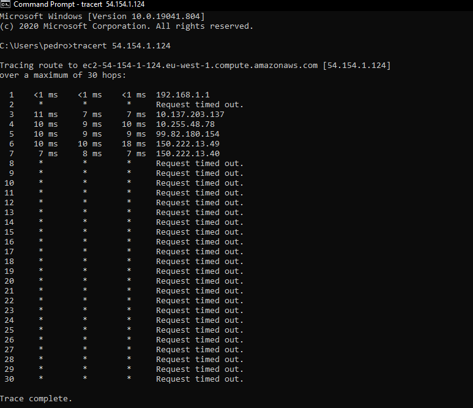
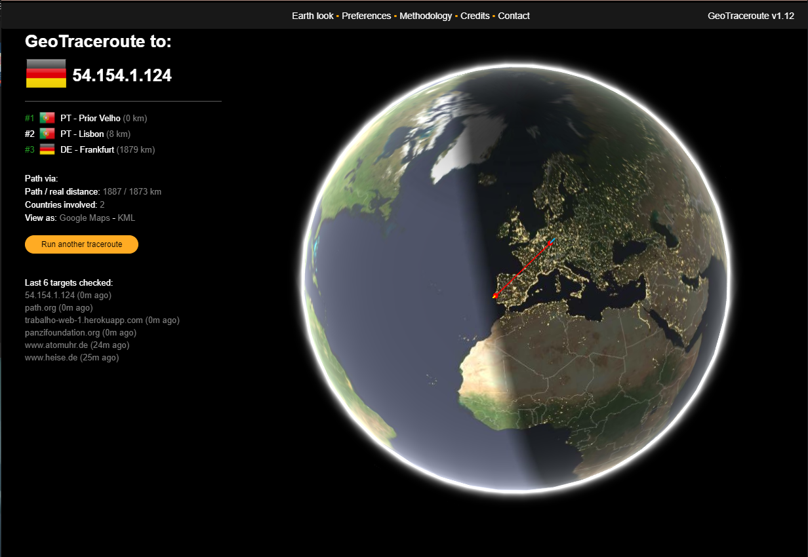
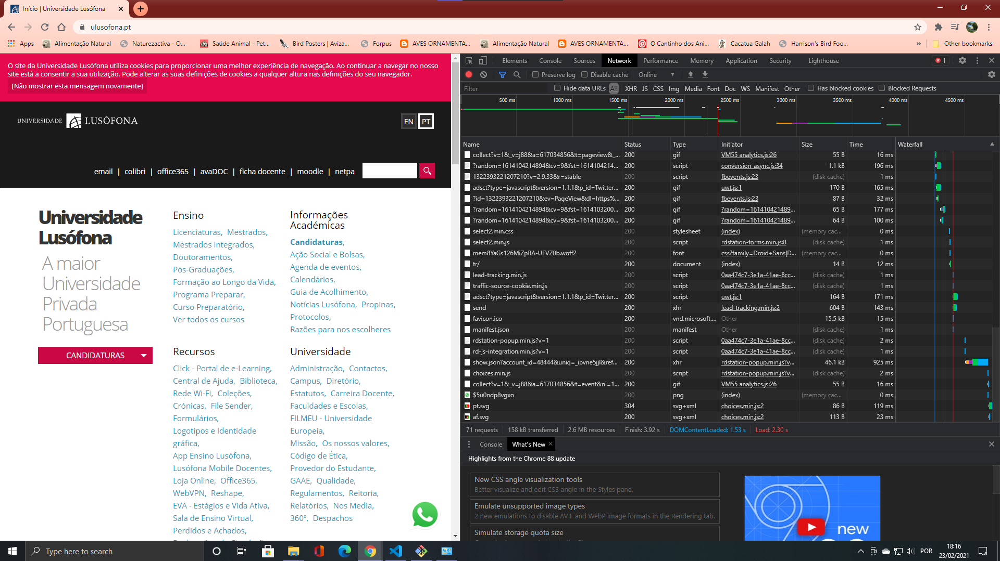

O seguinte report é referente ao 1º trabalho prático da disciplina Programação Web, que está dividido nos seguintes tópicos:
O primeiro passo deste trabalho prático foi obter os IP's do computador, do telemóvel e do servidor onde se encontra aloja a app através da plataforma Heroku, através da ferramenta ip-lookup. Os IP's do computador e do telemóvel apresentam na nossa zona de residência conforme esperado, como podemos visualizar nas imagens abaixo.
|
|
|---|---|
| Localização do computador | Localização do telemóvel |
Podemos observar que as coordenadas de ambos são as mesmas, através do computador e do telemóvel. De seguida para obtermos o IP de onde se encontra alojado a nossa app, efetuei através da linha de comandos um nslookup do endereço da app.
| Nslookup do endereço da app | Localização do servidor onde está alojada a app |
Podemos observar que a app encontra-se alojada num servidor da Amazon web services (AWS) localizado na Irlanda.
Ao efectuar o nslookup verifiquei que existiam 8 endereços públicos associados ao mesmo, o que é normal.
De seguida efetuei um tracerout ao endereço da app, o qual perdeu-se a meio do caminho ao servidor.
Utilizei a ferramenta geotraceroute.com conforme solicitado pelo enunciado.
No qual podemos observar que o último salto foi na Alemanha em Frankfurt, poderá não ter chegado ao final pelo tracerout não ter terminado.
|  |  |
|---|---|
| Traceroute do endereço da app | Geotraceroute do endereço da app |
Conforme solicitado pelo enunciado acedemos através da app alojada na plataforma Heroku ao nosso trabalho, verificamos que é apresentada a seguinte página:
Ao visualizarmos o código fonte dessa página através da opção "ver código fonte" (view page source) disponível no browser, podemos ver que corresponde ao código html que publicamos através do git.
| Inspeção do código fonte |
De seguida verificamos através ferramenta do chrome (edge chromium) visualizamos os ficheiros descarregados.
O qual podemos verificar pela imagem seguinte que foram efetuados dois pedidos ao servidor ambos concluidos com o código http 200 (OK).
Os pedidos foram feitos aos seguintes url's:
De seguida apresentados os quadros Preview, Headers e Timing dos dois ficheiros lado a lado respetivamente.
| Preview index.html | Preview wordcloud.png |
Neste separador efectuamos a pré-visualização do ficheiro descarregado.
No caso do ficheiro index.html é apresentada a página e no caso do ficheiro wordcloud.png é apresentada a imagem.
| Headers index.html | Headers wordcloud.png |
De seguinte apresentadamos os vários headers que se encontram no pedido GET feito ao servidor.
Os headers indicam-nos por exemplo o código de estado do pedido, neste caso 200 (OK), qual o metodo (GET), o IP e porto do servidor onde está alojado o ficheiro assim como outras informações relevantes.
| Timings index.html | Timings wordcloud.png |
Aqui podemos obter a informação referente aos tempos de resposta ao pedido feito, como o tempo que estivemos em queue para iniciar o download do ficheiro e quanto tempo demorou a transferência.
Para concluirmos conforme solicitado no enunciado apresentamos a mesma informação para a página da Lusófona.
|  | |
|---|---|
| Página da Lusófona | Preview www.ulusofona.pt |
| Headers www.ulusofona.pt | Timings www.ulusofona.pt |